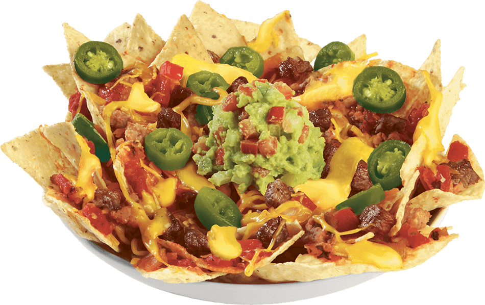
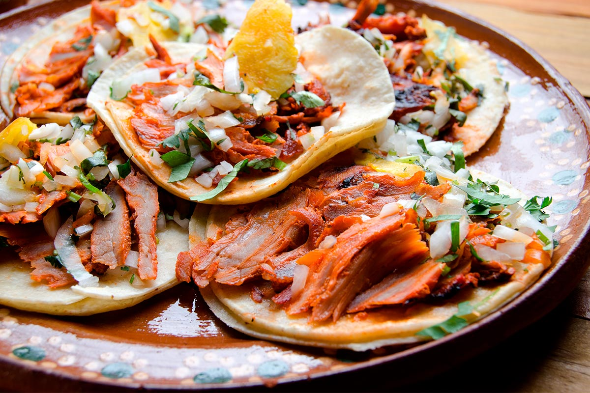

Entradas
| Platillo | Precio |
|---|---|
| Nachos Fusión - Totopos con queso, frijoles, carne al pastor, guacamole y jalapeños. | $120 MXN |
| Alitas BBQ Mezquite - Alitas con salsa BBQ de mezquite y chipotle. | $150 MXN |
| Queso Fundido con Chorizo - Queso fundido con chorizo picante y jalapeños, servido con tortillas. | $95 MXN |

Especialidades
| Platillo | Precio |
|---|---|
| Tacos de Ribeye al Chipotle - Tacos de ribeye con adobo de chipotle, cebolla y cilantro. | $160 MXN |
| Hamburguesa Tex-Mex - Hamburguesa con carne Angus, cheddar, jalapeños, guacamole y salsa BBQ. | $180 MXN |
| Burrito BBQ Brisket - Burrito con brisket ahumado, arroz, frijoles y salsa chipotle. | $130 MXN |
| Costillas BBQ al Tequila - Costillas de cerdo en salsa BBQ con toque de tequila. | $220 MXN |

Tacos
| Platillo | Precio |
|---|---|
| Tacos al Pastor - Deliciosos tacos de cerdo marinados con piña y especias. | $80 MXN |
| Tacos de Cochinita Pibil - Cerdo cocido lentamente con achiote y especias. | $90 MXN |
| Tacos de Barbacoa de Res - Res suave y jugosa servida con consomé. | $85 MXN |
| Tacos de Camarón al Ajillo - Camarones salteados con ajo y chile guajillo. | $110 MXN |
| Tacos Vegetarianos - Rellenos de champiñones, calabacitas y queso fresco. | $70 MXN |
